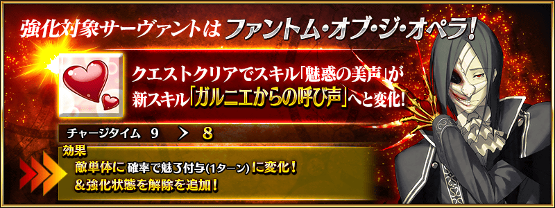
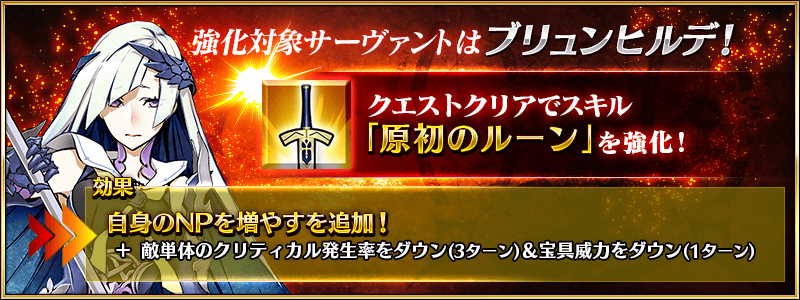
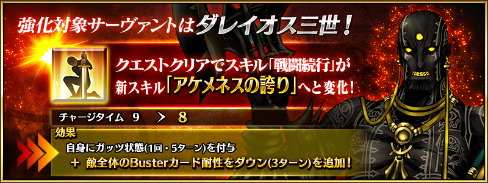
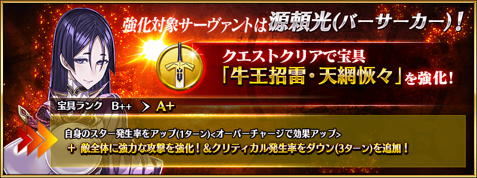
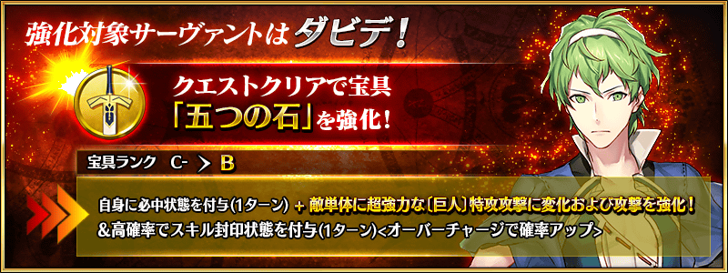
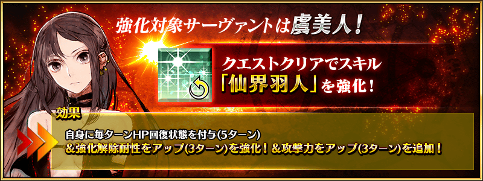
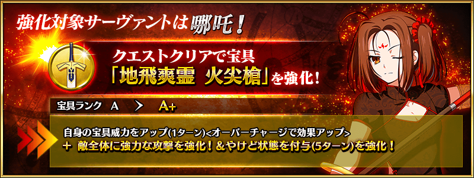
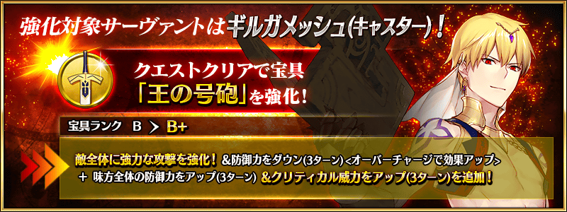
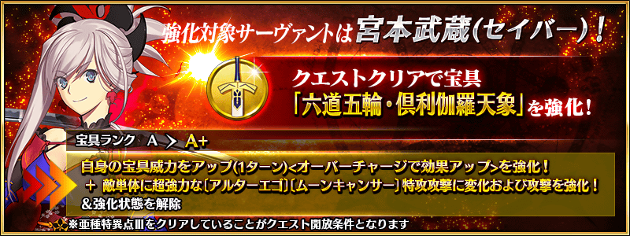

舉辦強化從者能力的特別關卡「從者強化關卡」的第12彈！
本次為了記念「Fate/Grand Order」5周年，合計14位從者的強化關卡在迦勒底之門永久追加！
合計14個強化關卡6天連續在迦勒底之門開放。
不僅進行對象從者的強化，也可獲得聖晶石做為關卡通過報酬。
※請注意在從者強化關卡沒有文字冒險部份。
◆追加時間◆
2020年8月5日(三) 17:00～
◆開放條件◆
持有的強化對象從者，必須使其最終再臨。
※未持有對象從者的話，不會出現關卡。
※關卡沒有舉辦期限。
















其他還有，『「FGO 迦勒底放送局 5周年SP ～under the same sky～」播送前夕宣傳活動』和期間限定「5周年記念英靈紀行Pick Up召喚(每日交替)」同時舉辦！
關於詳情，請自下述橫幅確認。
■「FGO 迦勒底放送局 5周年SP ～under the same sky～」播送前夕宣傳活動詳細情報

■「5周年記念英靈紀行Pick Up召喚(每日交替)」詳細情報